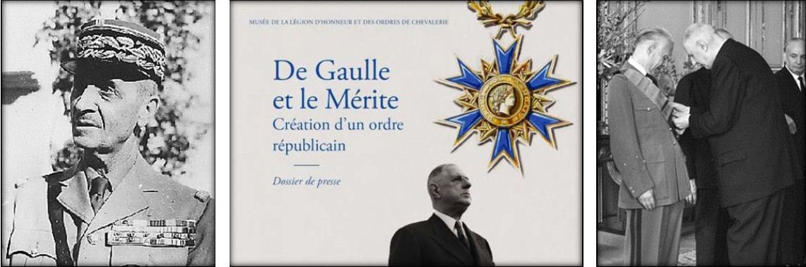
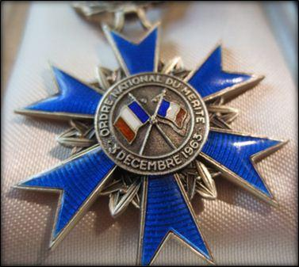
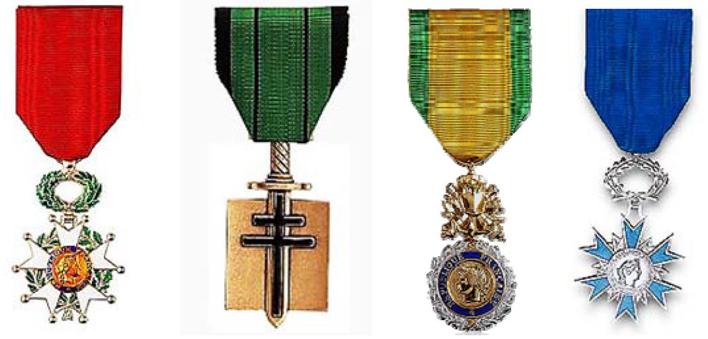
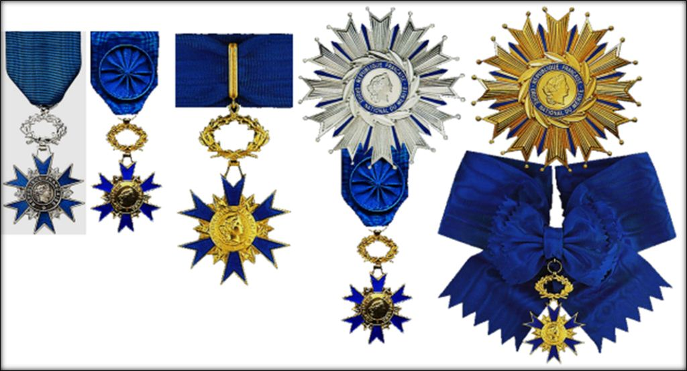
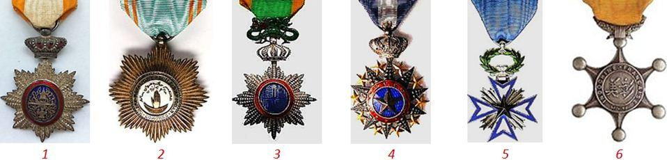
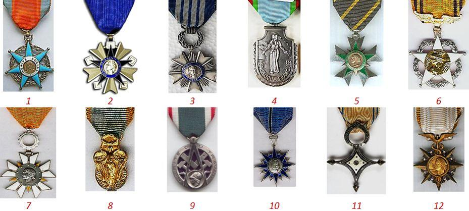
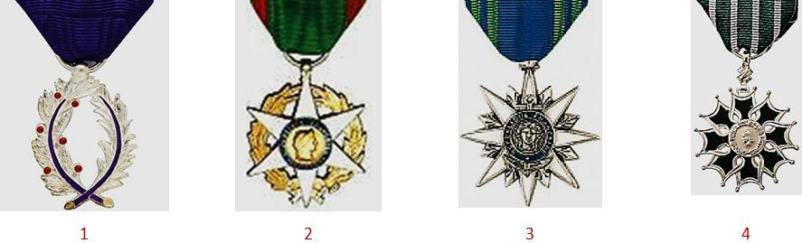

Le 3 décembre 1963, paraissait au Journal Officiel de la République Française, le décret N° 63-1196, publié au Journal Officiel le 5 décembre, instaurant l’Ordre National du Mérite, afin de donner « au Gouvernement (français) le moyen de récompenser des mérites ne présentant pas toutes les qualifications requises pour la Légion d’honneur ».
Le site de la Grande chancellerie de la Légion d’honneur précise que : « Institution républicaine née au cœur du XXème siècle, l’ordre national du Mérite est le second ordre national après la Légion d’honneur. Il a pour vocation de récompenser les « mérites distingués » et d’encourager les forces vives du pays. »
Si cette définition a le mérite d’exister, elle n’explique pas en revanche, en quoi l’ordre national du Mérite se différencie intrinsèquement du premier des ordres nationaux français, créé en 1802, par Napoléon Ier, l’ordre national de la Légion d’honneur (Cf - revue « Sans Frontières » Décembre 2015).

Le Général d’armée Georges Catroux, le dossier de presse des 50 ans de l’ordre national du mérite en 2013 par la GCLH et remise des premiers grand’croix de l’ordre par le général de Gaulle (ici le général Paul Ely)
Une initiative présidentielle gérée par le grand chancelier de la Légion d’honneur
Si l’ordre national du Mérite a bien été voulu par le général Charles de Gaulle, alors 18ème président de la Vème République, c’est le grand chancelier de l’ordre de la Légion d’honneur, le général d’armée Georges Catroux qui fut chargé de concrétiser ce projet de réforme plus global des ordres ministériels français, issus pour la plupart de la fin du XIX° et du début du XX° siècle.
Aussi dès le début de l’année 1963, un premier rapport, rédigé par le général Catroux, est adressé au général de Gaulle fixait les bases de ce que devrait être ce futur ordre national :
« La création d’un second ordre national s’inscrit dans un plan d’ensemble de revalorisation des décorations. […] L’objet du présent décret est de parachever l’œuvre entreprise par l’institution d’un second ordre national. […] Distinct de la Légion d’honneur par son objet, il récompensera les mérites distingués ; il a en propre son organisation, sa discipline et sa hiérarchie ; il est doté d’un conseil de l’Ordre distinct, mais présidé par un chancelier qui est en même temps le grand chancelier de la Légion d’honneur, son grand maître étant naturellement le Président de la République. (…) L’administration en est organiquement confiée à la grande chancellerie de Légion d’honneur. Le but second de la création de l’ordre national du Mérite est d’assurer une simplification et une harmonisation du système des distinctions honorifiques en substituant à ces ordres trop nombreux un second ordre national, unique dans son principe mais diversifié dans ses attributions ».
Un second ordre national pour remplacer des ordres ministériels secondaires
Ce rapport qui servira de base au futur décret de création de l’ordre national du Mérite présente des principes clairs pour le nouvel ordre national, à savoir :
1/ Valoriser la Légion d’honneur en établissant une graduation de récompense des mérites, tout d’abord les mérites distingués (Ordre national du Mérite) puis les mérites éminents (Ordre national de la Légion d’honneur).
2/ Créer une structure hiérarchique de gestion de l’ordre national du mérite, comme cela était déjà le cas avec l’Ordre de la Libération. Mais dans ce cas le chancelier de l’ordre national du Mérite sera le même que celui de la Légion d’honneur, alors que la chancellerie de l’ordre de la Libération est géré par un chancelier distinct.
3/ Se substituer aux ordres de mérite secondaires. Bien que le terme de « secondaire » ne soit pas particulièrement flatteur, cette partie du projet de décret constitutif du deuxième ordre national énonce clairement quel est son but réel : Réduire l’inflation des ordres ministériels,
4/ Conserver 4 ordres ministériels (ordres des palmes académiques, du Mérite maritime, du Mérite agricole et l’ordre des arts et lettres) pour les raisons que nous exposerons ci-après.
Etablir un ordre récompensant les mérites distingués

Le Revers de la médaille l’ONMComme nous l’avons indiqué, si la Légion d’honneur récompense les mérites « éminents », l’ordre national du Mérite récompensera désormais les mérites « distingués ». Qu’entend-on par la ? Sur le plan proprement linguistique, la notion peut sembler floue. En effet si l’on se réfère au dictionnaire « Larousse » de la langue française, les termes « distingués » et « éminents » portent les synonymes suivants :
Distingués : Appartenant à l’élite, hors du commun, illustre … éminent ( !)
Eminents : Est au-dessus du niveau commun, se distingue par sa grande qualité…
Bref, une simple étude sémantique ne peut suffire à elle seule, à préciser clairement les frontières qui séparent les conditions d’attribution des deux ordres nationaux puisqu’elles renvoient finalement aux mêmes notions de mérite.
En conséquence les mérites récompensés par la Légion d’honneur ou le Mérite ne résident pas tant dans la qualification même de ces mérite, que dans l’importance qu’y attachera l’autorité chargée de la remettre. Elle en réalité une première étape pour accéder à l’ordre « suprême » qu’est la Légion d’honneur, comme l’étaient jadis les ordres ministériels.
Naturellement, la Légion d’honneur peut être parfois directement attribuée aux français « méritants », notamment en cas d’acte de courages exceptionnels civils ou militaires.
Un ordre géré par une structure hiérarchique propre
A l’image de l’ordre national de la Légion d’honneur, l’ordre national du Mérite (que nous appellerons « ONM ») est géré par le Grand chancelier de la Légion d’honneur mais à travers une organisation administrative propre. Les conditions de candidature, d’examen et d’attribution de l’ordre sont copiées sur celles de la Légion d’honneur. Une commission disciplinaire gère également l’ordre. Cette commission est basée au Palais de Salm à Paris dans le VII° arrondissement au même titre que le premier ordre national.
Toutefois ce qui distingue l’ordre national du Mérite de son ordre ainé est qu’il n’il n’a pas de grand maitre au sens propre et qu’il n’existe donc pas de collier de grand-maitre à l’inverse de l’ordre national de la Légion d’honneur. C’est en effet le président de la république française qui lors de son investiture est fait grand-maitre de l’ordre national de la Légion d’honneur, puis grand-croix de l’ordre national du Mérite.
Il devient ainsi l’autorité « magistrale » de l’ordre national du Mérite, dont il délègue la gestion administrative au grand chancelier de l’ordre national de la Légion d’honneur qui est également nommé chancelier de l’ordre national du Mérite (il est d’ailleurs fait, dans ce cas, grand-croix des deux ordres nationaux).
Ce distingo protocolaire a été voulu dès le début pour donner assurément, une préséance à l’ONM sur la Légion d’honneur qui reste le premier ordre national français. Toutefois, en termes de préséance si la Légion d’honneur se porte toujours en premier, l’ONM ne se porte qu’après la croix de compagnon de l’ordre de la Libération et la médaille Militaire.

Ordre de préséance des 4 premières distinctions françaises
Un ordre qui se veut plus jeune
L’ordre national du mérite se veut résolument plus jeune car, si pour postuler au grade de chevalier de la Légion d’honneur, les statuts exigent qu’il faut justifier de 20 ans de mérites « éminents », 10 ans de mérites « distingués » sont seulement nécessaire selon le décret de 1963, pour accéder au Mérite ce qui en fait encore de nos jours un des ordres les plus jeune de France.
En réalité la jurisprudence de la Chancellerie fixe traditionnellement à 15 ans au moins de mérités distingués (au sens de « remarquables ») pour être fait chevalier de l’ONM. On peut passer officier 7 ans après avec des mérites nouveaux et tous les 5 ans, changer de grade et de dignités si les mérites nouveaux le justifient également.
Selon un communiqué de la Grande chancellerie de la Légion d’honneur paru le 5 avril 2015, l’âge moyen d’entrée dans l’ONM est de 54 ans, alors que celui dans l’ordre national de la Légion d’honneur est de 58 ans.
Règles de fonctionnement de l’ordre national du Mérite
Sur le plan de l’organisation interne, l’ONM reprend les grandes règles de fonctionnement de la Légion d’honneur, avec un code statutaire qui lui est propre.
Au niveau des récompenses on retrouve aussi 3 grades : chevalier, officier et commandeur et 2 dignités : grand-officier et grand-croix. Les insignes sont une étoile émaillée bleu à 6 branches, portant en son centre à l’avers, une tête de profil de Marianne, symbole de la république française et au revers deux drapeaux tricolores.
Le chevalier porte sa médaille argentée suspendue à un ruban bleu roi et à une couronne entrelacée également argentées.
L’officier porte un ruban bleu sur lequel est cousue une rosette de même couleur avec une étoile émaillée bleu bordée d’or et attachée à une bélière dorée.
Le commandeur lui, porte la croix suspendue à sa couronne dorée, en cravate autour du cou mais avec une dimension plus large de la « croix ».
Les dignitaires portent une plaque qui est soit argentée (à droite) avec la médaille d’officier à gauche pour les grand officiers, soit une plaque dorée (à gauche) avec le grand cordon bleu passant sur l’épaule droite pour les grand-croix. La croix de commandeur est suspendue au grand cordon comme sur le modèle de la Légion d’honneur, reprenant ainsi dans l’esprit, que l’étoile de l’ordre est toujours visible quel que soit le grade porté.

Les 3 grades (chevalier, officier, commandeur) et les 2 dignités (grander, grand-croix) de l’Ordre national du Mérite
Un ordre de Mérite national, qui se substitue à de nombreux ordres ministériels plus anciens
En 1963, date de création de l’ordre national du Mérite, la France ne compte pas moins de 15 ordres ministériels qui sont issus de son histoire, de la volonté de certains ministres de valoriser leurs actions et d’honorer l’empire colonial Français.
Selon les termes mêmes du rapport du général Catroux, Grand Chancelier de l’Ordre de la Légion d’honneur, présenté au président de la république et qui précèdera la rédaction du décret de d’instauration de l’ONM :
« L'esprit de la réforme des récompenses nationales serait toutefois faussé si cette réforme n'aboutissait qu'à créer un Ordre supplémentaire. La revalorisation de la notion de décoration, en tant que marque d'honneur accordée par l'Etat, impose une limitation non seulement des effectifs des attributaires des divers Ordres, mais encore du nombre des décorations elles-mêmes. Nés pendant la seconde moitié du XIXe siècle, les Ordres spécialisés, par suite du développement continu des activités de l'Etat et, par voie de conséquence, de la multiplication et de la spécialisation des départements ministériels sont passés, depuis 1930, de cinq à vingt. Le but second de la création de l'Ordre national du Mérite est d'assurer une simplification et une harmonisation du système des distinctions honorifiques en substituant à ces Ordres trop nombreux un second Ordre national, unique dans son principe mais diversifié dans ses attributions, afin que les mérites distingués antérieurement par les Ordres secondaires ne restent point sans récompense ».
Suppression des ordres coloniaux et d’outre-mer
Plusieurs ordres coloniaux ont été supprimés après la décolonisation (ordre du Cambodge en 1948 et l’ordre du Dragon d’Annam en 1950), et les autres ordres coloniaux ont pris le nom d’ordres de la France d’outre-mer avant de disparaitre complètement avec la création de l’ordre national du Mérite, lors de l’application du décret du 3 décembre 1963.
Leurs titulaires, comme ceux des ordres des ministères, restent toutefois autorisés à en conserver les insignes jusqu’à la fin de leur vie. Certains de ces ordres ex-coloniaux seront toutefois recrées après l’indépendance de ces pays mais quelques fois sous un autre nom ou avec un autre ruban.

1 - Ordre royal du Cambodge (Indochine) créé en 1864 (Non éteint), 2 - Ordre de l’Étoile d’Anjouan (Comores) créé en 1874 (Non éteint), 3 - Ordre impérial du Dragon d’Annam (Indochine) créé en 1884 (Eteint), 4 - Ordre du Nichan El-Anouar (Territoire Afars et Issas) créé en 1887 (Non éteint), 5 - Ordre de l’Etoile noire (Dahomey/Bénin) créé en 1889 (Eteint), 6 - Ordre du Mérite indochinois (Indochine) créé en 1900 (Eteint)
Suppression des ordres ministériels
Comme pour les ordres de la France d’outre-mer, les ordres ministériels qui suivent vont être également supprimés d’être attribués (ou promus) à partir du 1er janvier 1964. Egalement, les titulaires continuent à jouir des prérogatives attachées à ces ordres d'après l'article 38 du décret instaurant l’ONM. Les ordres ministériels sont donc placés en extinction depuis 1964, mais ne sont pas éteints tant qu'il reste au moins un survivant dans l’un des ordres. De plus, aucun décret n’ayant abrogé ces ordres ministériels ceux-ci pourraient être juridiquement concédés, de nouveau, un jour…

1 - Ordre du Mérite social créé le 25 octobre 1936, 2 - Ordre de la Santé publique, créé le 18 février 1938, 3 - Ordre du Mérite artisanal créé le 11 juin 1948, 4 - Ordre du Mérite touristique créé le 27 mai 1949, 5 - Ordre du Mérite combattant créé le 14 septembre 1953, 6 - Ordre du Mérite postal créé le 14 novembre 1953, 7 - Ordre de l’Economie nationale créé le 6 janvier 1954, 8 - Ordre du Mérite sportif créé le 6 juillet 1956, 9 - Ordre du Mérite du travail créé le 21 janvier 1957, 10 - Ordre du Mérite civil créé le 14 octobre 1957, 11 - Ordre du Mérite saharien créé 4 avril 1958, 12 - Ordre du Mérite commercial et industriel créé le 29 juin 1961
Les 4 ordres ministériels qui survivent à l’ordre national du Mérite
Le décret de 1963 estime que 4 ordres ministériels doivent substituer : l’Ordre des Palmes académiques, celui du Mérite maritime et celui du Mérite agricole, « en raison de leur ancienneté et de leurs caractères propres », ainsi que l'Ordre des Arts et Lettres, « en raison du prestige particulier que lui confère la qualité éminente des personnes nommées ou promues depuis sa création ».
Le décret de continuer : « En outre, les médailles d'honneur actuellement existantes continuant d'être décernées (et) il apparaitra également nécessaire, sous certaines conditions, de remplacer par des médailles honorifiques certains des Ordres supprimés ». Les médailles (d’honneur) ministérielles - auxquelles étaient souvent rattachés les ordres ministérielles suspendus - restent donc bien attribuées… Mais ceci fera l’objet d ‘une autre étude !

1 - Ordre des Palmes académiques créé en 1808 par Napoléon Ier et réorganisé le 4 octobre 1955, 2 - Ordre du Mérite agricole créé le 7 juillet 1883, 3 - Ordre du Mérite maritime créé le 9 février 1930, 4 - Ordre des Arts et des Lettres créé le 2 mai 1957
En conclusion, même si le décret N° 63-1196 du 3 décembre 1963, a permis de mettre un peu d’ordre dans le « maquis phaleristique » des ordres ministériels ; la conservation de toutes les médailles d’honneur ministérielles et la subsistance de quatre ordres ministériels - qualifiés de « plus anciens, ou plus prestigieux » - continuent à placer la France comme l’un des pays occidentaux le plus prolixe en décorations ; « ces quolifichets avec lesquels on mène le monde » comme le disait avec un certain cynisme, tinté de réalisme, l’empereur Napoléon Ier.
L’ordre compte aujourd’hui 187.000 membres.
306.000 personnes ont été nommées ou promues depuis la création de l’ordre en 1963.
4.600 personnes reçoivent l’insigne chaque année.
57 % des membres sont décorés à titre civil, 43 % à titre militaire.
50 % de femmes (parité appliquée pour les promotions civiles).
80 % des décorés sont des chevaliers.
14 % des dossiers sont écartés par le conseil de l’ordre.
Les étrangers peuvent se voir attribuer des distinctions dans l'Ordre du Mérite dans des conditions analogues aux conditions prévues pour la Légion d’honneur.
L’ordre à sa propre association : L’A.N.M.O.N.M. (Association nationale des membres de l'Ordre national du Mérite) (A.N.M.O.N.M.), dont le siège social est fixé 163, rue Saint-Honoré à Paris 1er et qui s’appuie sur un réseau de sections départementales très actives. Les membres peuvent également faire inscrire leurs filles, petites-filles et arrière-petites-filles dans les prestigieuses maisons d’éducation de la Légion d’honneur.
Partager cette page